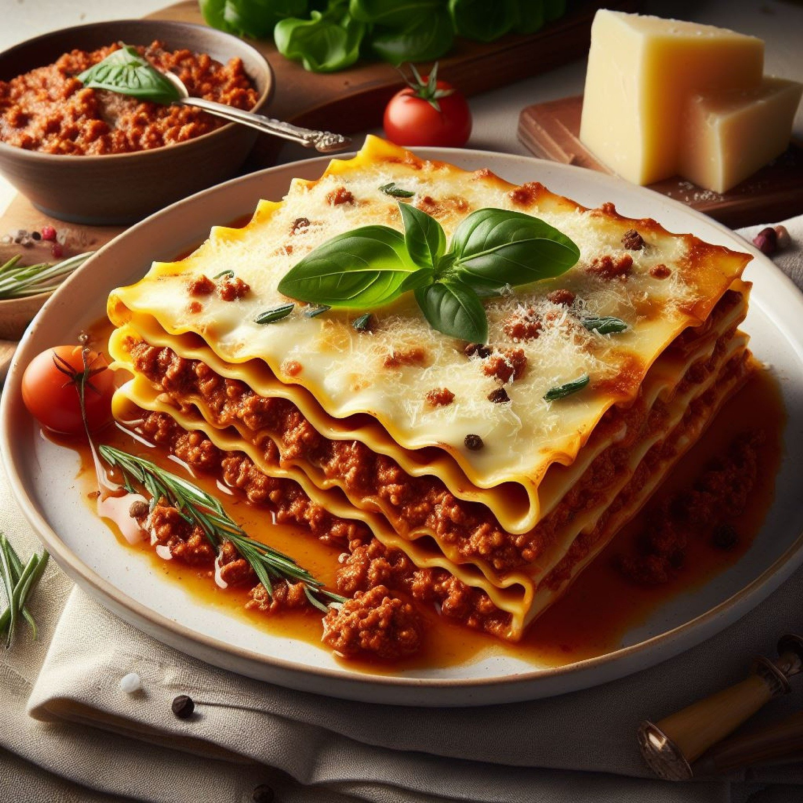

Vegan lasangna

Description
This hearty and delicious vegan lasagna is a crowd-pleaser, perfect for a cozy dinner or special occasion. Packed with layers of rich tomato sauce, creamy vegan béchamel, and savory lentils, this dish is both satisfying and nutritious.
The lasagna noodles hold everything together beautifully, and the combination of fresh vegetables and herbs brings a vibrant flavor to each bite. Whether you're vegan or not, this lasagna is sure to become a family favorite!
Ingredients
- 12 lasagna noodles
- 1 cup cooked green or brown lentils
- 2 cups marinara sauce
- 1 onion, diced
- 3 cloves garlic, minced
- 1 zucchini, thinly sliced
- 1 cup fresh spinach
- 1/2 cup vegan ricotta
- 1/2 cup vegan mozzarella
- 2 tablespoons olive oil
- 1 tablespoon dried basil
- 1 tablespoon dried oregano
- Salt and pepper, to taste
Steps
- Preheat the oven to 375°F (190°C) and cook the lasagna noodles according to package instructions. Drain and set aside.
- In a large pan, heat the olive oil over medium heat. Add the onion and garlic and sauté until soft and fragrant.
- Stir in the zucchini and cook for 5 minutes, until slightly tender. Add the spinach and cook until wilted.
- Mix in the cooked lentils, marinara sauce, basil, oregano, salt, and pepper. Let it simmer for 10 minutes to blend the flavors.
- In a baking dish, spread a thin layer of the lentil mixture. Add a layer of lasagna noodles on top, followed by a layer of the lentil mixture and dollops of vegan ricotta.
- Repeat the layers until all the noodles and filling are used, finishing with a layer of vegan mozzarella on top.
- Cover the dish with foil and bake for 25 minutes. Remove the foil and bake for an additional 10 minutes to brown the top.
- Let the lasagna rest for 10 minutes before slicing and serving. Enjoy!